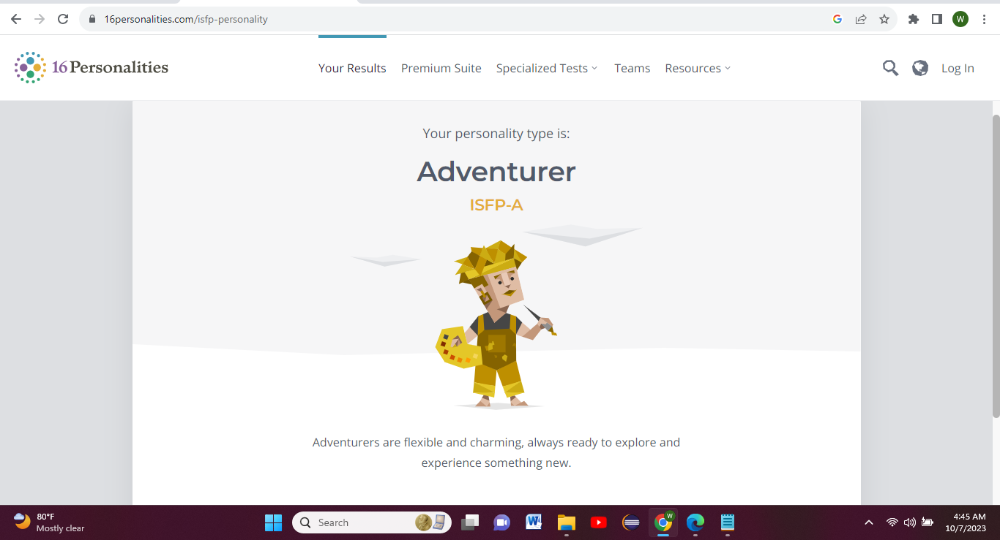

My strongest personality trait is Consientiousness. Conscientiousness is one defined by high levels of thoughtfulness, good impulse control, and goal-directed behaviors. Highly conscientious people tend to be organized and mindful of details. They plan ahead, think about how their behavior affects others, and are mindful of deadlines.Someone scoring lower in this personality trait is less structured and less organized. They may procrastinate to get things done, sometimes missing deadlines completely.
I am one who scores lower in conscientousness as it relates to procastination. This impacts my school life in that, I sometimes procastinate to get my assignments done. This is not good because I often feel pressured when everything is left to be done in a day or two, and sometimes I do not end up performing well. However, even though I procastinate, I always get my assignments done. Additionally, I am also not always very organized in how I do things, but I still accomplish the goal I set to achieve. I believe I have high levels of thoughtfulness, as I care about others and not just myself. When I show people that I care, my classmates in particular they are willing to help me with my school work if it is that I am not sure of something.
My strongest emotion is happiness. I love to laugh and be happy. This emotion impacts my school life in that, when I feel pressured or burdened down with school assignments, I do something that makes me laugh to take my mind off school and have a breather.
My grandmother always says "Do the good you can,to all the people you can, whenever you can." My grandmother is my hero because I have spent all my life with her. She always takes care of me and sister and has never tried to hurt us or bring us down, but always seeks to uplift and encourage us. My grandmother inspires me as she has been on this earth for so long and has endured many hardships,yet she never compplains, but instead, does what she can to make any situation better. She ensures that she corrects me when I am wrong, so that I can become the best version of myself. Whenever my grandmother says that motto, I am encouraged to do good to people no matter what.

This personality test may have validity. However, for me it was not not valid because I am not an adventurous person as I am on the reserved and quiet side.Additionally, I am not one to readily try new things.